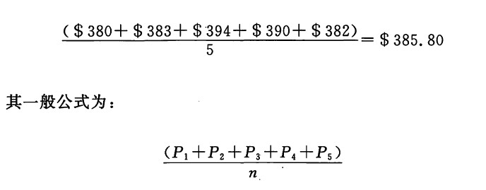

名符其实，最基本的移动平均线是所谓简单移动平均线。计算出有关价格数据的算术平均值，就得到了这样的平均线。举例来说，假定黄金市场最近的5个收市价格分别为380美元、383美元、394美元、390美元、382美元，那么，上述收市价的5日移动平均值就是

其中，P1=最近的收市价；
P2=最近的收市价的前一个收市价，余者依此类推；
n=移动平均的数据点数。
在“移动平均线”术语中，“移动”的意思是，当我们计算新的平均值时，一般先从前一个移动平均值中减去最早的那个价格数据，然后再把最新的价格数据加到这个数值上。如此一来，随着新的数据的不断加入，平均值也就向前移动了。
从上述关于简单移动平均线的例子中我们可以看到，每一天的黄金价格在总的移动平均值中占有1/5的份额（因为这是5天移动线平均的例子）。在9天移动平均值中，每一天的价格在总的移动平均值中仅占1/9的份额。由此可见，移动平均线的时间参数越大，则单个的价格数据对平均值的影响越小。
移动平均线的时间参数越短，则移动平均线越“贴近”价格图线。这类平均线对当前的价格变化更为敏感，从这个意义说，这是其有利的一面。它也有不利的一面，那就是引发“拉锯现象”的可能性也同，时加大了。长期的移动平均线提供了较强的平滑效果，但是它们对当前的价格变化较为迟钝。
在比较流行的移动平均线中，对短线的交易商来说，包括4天、9天、18天移动平均线；对操作长期头寸的市场参与者来说，包括13周、26周、40周移动平均线。在日本，13周和40周移动平均线最为常用。使用移动平均线的市场参与者范围极广，其中既有日内交易商，也有保值交易商。前者对实时的交易数据应用移动平均方法，而后者眼里的移动平均线可能是按月、乃至按年来计算的。
在移动平均线的研究方法中，除了选择不同的时间参数之外，还有可能选择不同的价格数据来计算平均值。正如我们在前面的例子中所介绍，绝大多数移动平均线系统采用收市价格进行计算。不过，利用最高价、最低价，以及最高价与最低价之间的中间价来计算移动平均线的也大有人在。有时候，人们甚至用上了移动平均线的移动平均线。
下一篇：加权移动平均线
上一篇：第十三章 蜡烛图与移动平均线
copyright @ 2018 制作：汉钛电线，Hingtak Wire & Cable LLC